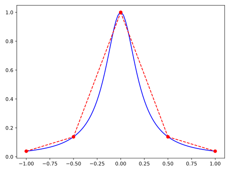

Newton-Cotes Method - Theory
Disclaimer: I am not an expert on numerical analysis. The theory is solid, however all implementation are mine and I haven't spent too much time on them. The source is the lecture notes I have taken for the Mathematical Methods course at Imperial College. The lecturer was Dmitry Turaev.
Table of contents
- Introduction
- Trapezium rule
- Simpson's rule
- General method
- Appendix: Lagrange remainder
Introduction
I will deal with the simplest case - a real integral over a compact domain:
$$
\int_{a}^{b} f(x) dx, \quad f: [a,b] \to \mathbb{R}.
$$
Our goal is to obtain the best accuracy while minimising the number of calculations. Even more importantly, we would like to keep track of errors - this is probably the most important point of numerical analysis. First, let's look at two specific (simple) methods, the trapezium and Simpson's rule. Then, I will present the general method.
Trapezium rule
The idea is to approximate \( f(x) \) by picking a set of points called nodes, and joining consecutive nodes by line segments, like below:

The integral is approximated by the area bounded by the trapeziums. The general expression for a set of \(n\) nodes \( \{x_k\} \) is
$$
\int_a^b f(x)dx = \sum_{k=0}^{n-1} \int_{x_k}^{x_{k+1}} f(x) dx \approx \sum_{k=0}^{n-1} \frac{f(x_k) + f(x_{k+1})}{2} (x_{k+1} - x_k).
$$
We can simplify by choosing equidistant nodes, so that we compute \((x_{k+1} - x_k ) \) once. Let
$$
h \equiv \frac{b-a}{n} \quad \Rightarrow \quad x_k = a + hk.
$$
Denoting \( f(x_k)\equiv f_k \), we have
$$
\int_a^b f(x) dx \approx \frac{h}{2} \sum_{k=0}^{n-1} (f_k + f_{k+1}) = h \big( f_0/2 + f_1 + \cdots + f_{n-1} + f_{n}/2 \big)
$$
This is the trapezium rule.
We are not done yet! We need a method to estimate errors. In general, there is no way to do so - we need some knowledge of the function to quantify how much it differs from a straight line on a given interval. We can make progress if the second derivative of \( f \) is bounded on the interval \( (a,b) \).
Suppose \( f \) has a bounded second derivative, such that
$$
|f''(x)| \leq M, \quad \forall \; x \in (a,b),
$$
for some \( M \geq 0 \). Taylor expand \( f(x) \) around some \( x^\star \):
$$
f(x) = f(x^\star) + f'(x^\star) (x-x^\star) + \cdots + \frac{f^{(n)}(x^\star)}{n!}(x-x^\star)^n + \frac{f^{(n+1)}(\xi)}{(n+1)!} (x-x^\star)^{n+1},
$$
where \( \xi \in [x^\star, x] \). The last term is the Lagrange remainder. For our purposes, we choose \( n=1\) and \( x^\star = x_k \):
$$
f(x) = f_k + f'_k(x-x_k) + \frac{f''(\xi)}{2} (x-x_k)^2.
$$
We can put an upper bound on the error on the interval \( (x_k, x_{k+1}) \) as follows:
$$\begin{aligned} \bigg| \frac{h}{2}(f_k + f_{k+1}) -\int_{x_k}^{x_{k+1}} f(x)dx\bigg| &= \bigg| \frac{h}{2}\Big(f_k + hf'_k + \frac{h^2}{2}f''(\xi)+ f_k\Big) - \int_{x_k}^{x_{k+1}} \Big(f_k + (x-x_k)f'_k + \frac{1}{2}(x-x_k)^2 f''(\zeta(x)) \Big)dx \bigg| \\
&= \bigg| \frac{h^3}{4}f''(\xi) - \int_{x_k}^{x_{k+1}}\frac{(x -x_k)^2}{2}f''(\zeta(x))dx \bigg| \\
&\leq \bigg| \frac{h^3}{4}f''(\xi) \bigg| + \bigg| M\int_{x_k}^{x_{k+1}}\frac{(x -x_k)^2}{2}dx \bigg| \\
&\leq \frac{5}{12} Mh^3. \end{aligned}$$
This is the worst case for a single interval. To obtain the error over the whole interval, we simply multiply by the number of intervals, \( n=(b-a)/h \):
$$ \bigg| \int_a^b f(x)dx - \frac{h}{2}\sum_{k=0}^{n-1}(f_{k+1}-f_k) \bigg| \leq \frac{5}{12} (b-a) M h^2. $$
Hence, we see the error bound is of order \( \mathcal{O}(h^2) \). As long as \(M\) and the interval length is not too large, the trapezium yields decent results. But we can do much better!
Simpson's rule
The rule is as follows:
$$ \int_a^b f(x) dx \approx \frac{h}{6}(f_0 + 4f_{1/2} + 2f_1 + 4f_{3/2} + \cdots + 4 f_{n-1/2} + f_n), $$
where \(f_{k+1/2} = f(a + (k+1/2)h)\). We will see where this method comes from, and how we can come up with even better ones in the next section. In the remainder of this section, I will show that the error bound is of order \( \mathcal{O}(h^4) \).
Assume the fourth derivative of \(f\) is bounded so that \( |f^{(4)}(x)| \leq M \) for all \( x \in [a,b] \).
The contribution of a given interval \( x_k, x_{k+1} \) is
$$I_k = \int_{x_k}^{x_{k+1}} f(x)dx \approx \frac{h}{6} (f_k + 4 f_{k+1/2} + f_{k+1}).$$
To find the error bound, we simply Taylor expand \( f_{k+1/2} \) and \( f_{k+1} \) around \( f_k \) up to the fourth Lagrange remainder:
$$ \begin{aligned} \frac{h}{6} (f_k + 4 f_{k+1/2} + f_{k+1}) &= \frac{h}{6} \Big[(1+4+1)f_k + (1+2)hf'_k + (1+1)\frac{h^2}{2}f''_k + (1+1/2)\frac{h^3}{6} f_k''' + \frac{h^4}{24}\Big\{f^{(4)}(\xi) + \frac{1}{4}f^{(4)}(\zeta)\Big\} \Big] \\
&\leq hf_k + \frac{h^2}{2}f'_k + \frac{h^3}{6}f''_k + \frac{h^4}{24}f'''_k + \frac{5}{576}Mh^5. \end{aligned} $$
It is not an accident that the coefficients conspire to reproduce the corresponding Taylor series, and it is exactly this conspiracy that determines the order of the error.
The integral \( I_k \) when expanded to the same order reads:
$$ \int_{x_k}^{x_{k+1}} f(x)dx \leq hf_k + \frac{h^2}{2}f'_k + \frac{h^3}{6}f''_k + \frac{h^4}{24}f'''_k + \frac{1}{120}Mh^5. $$
The two expressions differ at order \( h^5 \), and so the error is bounded by
$$ \bigg| \int_{x_k}^{x_{k+1}} f(x)dx - \frac{h}{6} (f_k + 4 f_{k+1/2} + f_{k+1}) \bigg| \leq \frac{49}{2880} M h^5.$$
The total error over the whole interval is therefore \( \displaystyle\frac{49}{2880} (b-a) M h^4 \).
General method
In general, it is not helpful to think of integrals as areas under curves. The better way is to think of integrals as computing the average value of a function, as
\begin{equation}\langle f \rangle = \frac{1}{(b-a)} \int_a^b f(x) dx.\end{equation}
The idea is as follows: we divide the interval \([a,b]\) into \(n\) sub-intervals (labeled by \(k\)), and then divide each sub-interval into \(m\) sub-sub-intervals. With this setup, the average \(\langle f \rangle\) is approximated as a weighted sum as follows:
\begin{gather}\langle f \rangle = \frac{1}{(b-a)}\int_a^b f(x) dx \approx \frac{1}{n} \sum_{k=0}^{n-1}\sum_{j=0}^{m} \alpha_j f(a + h(k+j/m)) \\
\Rightarrow \quad \int_a^b f(x) dx \approx h \sum_{k=0}^{n-1} \sum_{j=0}^m \alpha_j f(a + h(k+j/m)) \end{gather}
where \( \alpha_j \) are the weights to be determined. In total, we are evaluating the function at \(n\times m\) equally spaced points along \([a,b]\). The weights are determined through minimising the error along each sub-interval.
In this language, the trapezium and Simpson's rules are defined by:
\begin{aligned}
&\text{Trapezium: }\quad m=1,\; \alpha_0 = \alpha_1 = \frac{1}{2}, \\
&\text{Simpson: }\quad m=2, \; \alpha_0=\frac{1}{6}, \; \alpha_1 = \frac{4}{6}, \; \alpha_2 = \frac{1}{6}.
\end{aligned}
Error estimation proceeds as follows: suppose we have a bound on the \((\ell+1)^{\text{st}}\) derivative of \(f \) so that \( |f^{(\ell+1)}(x)|\leq M \). The difference between \(f\) and the first \(\ell\) terms in its Taylor expansion, denoted \(P_\ell \), is bounded by the Lagrange remainder:
$$|f(x)-P_\ell(x)| \leq M \frac{(x-x_s)^{\ell+1}}{(\ell+1)!}.$$
It should be clear now how we fix \(\alpha_j \), we simply match with polynomials of degree \( p\leq \ell \) when integrated over an interval. Explicitly, we require that for all polynomials \(g_p(x)\) of degree \(p \leq \ell \),
$$\int_0^1 g_p(x)dx = \sum_{j=0}^m \alpha_j g_p(j/m).$$
I chose to restrict to the interval \([0,1]\), which we are free to do without loss of generality as any changes in the integration range can be compensated by an appropriate scaling of the polynomials.
Example (Trapezium). Let's check this condition for the trapezium rule:
\begin{align}
p &= 0: \int_0^1 dx = 1 = \frac{1}{2}(1) + \frac{1}{2}(1), \\
p &= 1: \int_0^1 x dx = \frac{1}{2} = \frac{1}{2}(0) + \frac{1}{2}(1), \\
p &= 2: \int_0^1 x^2 dx = \frac{1}{3} \neq \frac{1}{2}(0) + \frac{1}{2}(1)
\end{align}
We see that we can satisfy the condition up to \(\ell=1 \), and so the error is on the order \(\mathcal{O}(h^2)\).
Example (Simpson). Similarly for Simpson's rule:
\begin{align*}
p &= 0: \int_0^1 dx = 1 = \frac{1}{6}(1) + \frac{4}{6}(1) + \frac{1}{6}(1) , \\
p &= 1: \int_0^1 x dx = \frac{1}{2} = \frac{1}{6}(0) + \frac{4}{6}\left( \frac{1}{2}\right) + \frac{1}{6}(1) , \\
p &= 2: \int_0^1 x^2 dx = \frac{1}{3} = \frac{1}{6}(0) + \frac{4}{6}\left( \frac{1}{4}\right) + \frac{1}{6}(1) , \\
p &= 3: \int_0^1 x^3 dx = \frac{1}{4}= \frac{1}{6}(0) + \frac{4}{6}\left( \frac{1}{8}\right) + \frac{1}{6}(1) , \\
p &= 4: \int_0^1 x^4 dx = \frac{1}{5} \neq \frac{1}{6}(0) + \frac{4}{6}\left( \frac{1}{16}\right) + \frac{1}{6}(1).
\end{align*}
Here, we can solve until \(\ell=3\), so the error is on order \(\mathcal{O}(h^4)\).
In general, since we have \(m+1\) weights to determine, at a minimum we should be able to satisfy \(m+1\) equations and so the error will be as least as good as \(\mathcal{O}(h^{m+1})\). However, it may be the case - as it is with Simpson's rule - that \(m+1\) weights are able to satisfy \(m+2\) equations and so the error order is suppressed by an additional factor of \(h\).
In general, the set of equations to be solved is:
\begin{align*}
1 &= \alpha_0 + \dots + \alpha_m \\
\frac{1}{2} &= \alpha_0 (0/m) + \alpha_1 (1/m) + \dots + \alpha_m (m/m) \\
\vdots& \\
\frac{1}{m+1} &= \alpha_0 (0/m)^{m} + \alpha_1 (1/m)^{m} + \dots + \alpha_m (m/m)^{m},
\end{align*}
and the error order is determined by the maximum number \(\ell\) of such equations that can be satisfied.
Appendix: Lagrange remainder
Claim 1: The error \( R_n \) after \(n\) terms of a Taylor series,
$$
f(x) = f(x_0) + f'(x_0) (x-x_0) + \cdots + f^{(n)}(x_0) \frac{(x-x_0)^n}{n!} + R_n,
$$
is given by
$$
R_n = \int_{x_0}^{x} f^{(n+1)}(u) \frac{(x-u)^n}{n!} du.
$$
Proof 1: Clearly this follows from a sequence of integration by parts. It is easiest to use induction. First, look at the \( n=0 \) case:
$$
R_0 = \int_{x_0}^x f'(u) du = f(x) - f(x_0)
$$
and the claim clearly holds. Next, we integrate \( R_n \) by parts:
$$
R_n = f^{(n+1)}(x_0) \frac{(x-x_0)^{n+1}}{(n+1)!} + \int_{x_0}^x du f^{(n+2)}(u) \frac{(x-u)^{n+1}}{(n+1)!} = f^{(n+1)}(x_0) \frac{(x-x_0)^{n+1}}{(n+1)!} + R_{n+1}.
$$
This completes the proof of claim 1.
Finally, note the obvious identity:
$$ \min_{u\in[x_0,x]}\{ f^{(n+1)}(u) \} \int_{x_0}^x (x-u)^n du \leq \int_{x_0}^x f^{(n+1)}(u)(x-u)^n du \leq \max_{u\in[x_0,x]}\{ f^{(n+1)}(u) \} \int_{x_0}^x (x-u)^n du $$
$$ \Rightarrow \quad \min_{u\in[x_0,x]}\{ f^{(n+1)}(u) \} \leq \frac{n+1}{(x-x_0)^{n+1}} \int_{x_0}^x f^{(n+1)}(u)(x-u)^n du \leq \max_{u\in[x_0,x]}\{ f^{(n+1)}(u) \} $$
Now, by the intermediate value theorem there must exist a \( \xi \in [x_0, x] \) such that
$$ \frac{(x-x_0)^{n+1}}{n+1} f^{(n+1)}(\xi) = \int_{x_0}^x f^{(n+1)}(u)(x-u)^n du $$
Hence, the remainder can be expressed as
$$ R_n = \frac{f^{(n+1)}(\xi)}{(n+1)!} (x-x_0)^{n+1}. $$